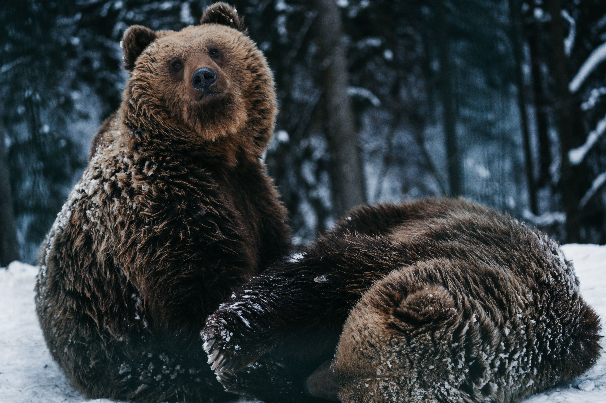

Bears are large, powerful mammals known for their thick fur, strong bodies, and impressive size. They can be found in different parts of the world, including forests, mountains, and Arctic regions. There are eight species of bears, including polar bears, grizzly bears, black bears, and pandas. Although they may look similar, each species has unique characteristics and adaptations that help them survive in their environments. Bears are generally omnivores, meaning they eat both plants and animals. Their diets can include berries, fish, insects, roots, and small animals. Many bears are solitary creatures and prefer to spend most of their time alone. Some species also hibernate or enter a period of reduced activity during colder months. Bears play an important role in maintaining healthy ecosystems by spreading seeds and helping balance animal populations.